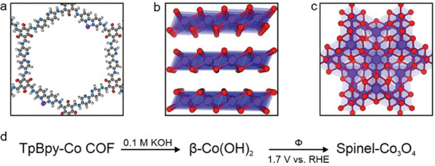

Electrocatalysis
I study individual nanoparticles and catalyst ensembles to understand how structure affects electrochemical reactivity.
Related publicationPersonal website
Research
My research connects electrochemistry, surface science and materials chemistry to understand how composition, structure and interfacial transformations govern activity, selectivity and stability.

I study individual nanoparticles and catalyst ensembles to understand how structure affects electrochemical reactivity.
Related publicationI use infrared methods such as ATR-SEIRAS and PM-IRRAS to probe species and processes at electrode surfaces during reactions.
Related publicationI combine X-ray photoelectron spectroscopy (XPS) with structural and morphological methods such as XRD and AFM.
Related publicationSolid–liquid interfaces, reaction mechanisms, charge transfer and electrode stability.
Nanostructured electrodes, battery interfaces, electroactive thin films and coordination compounds.
P. Hosseini, A. Rodríguez-Camargo, Y. Jiang, S. Zhang, C. Scheu, L. Yao
Our cobalt framework kept producing oxygen even as its structure changed. The study identified cobalt hydroxide formation in alkaline solution and spinel cobalt oxide after oxygen evolution. The porous framework helped keep those particles apart.
F. Hiege, C.-W. Chang, O. Trost, P. Hosseini, et al.
B. He, P. Hosseini, T. Priamushko, et al.
P. Cignoni, P. Hosseini, C. Kaiser, et al.